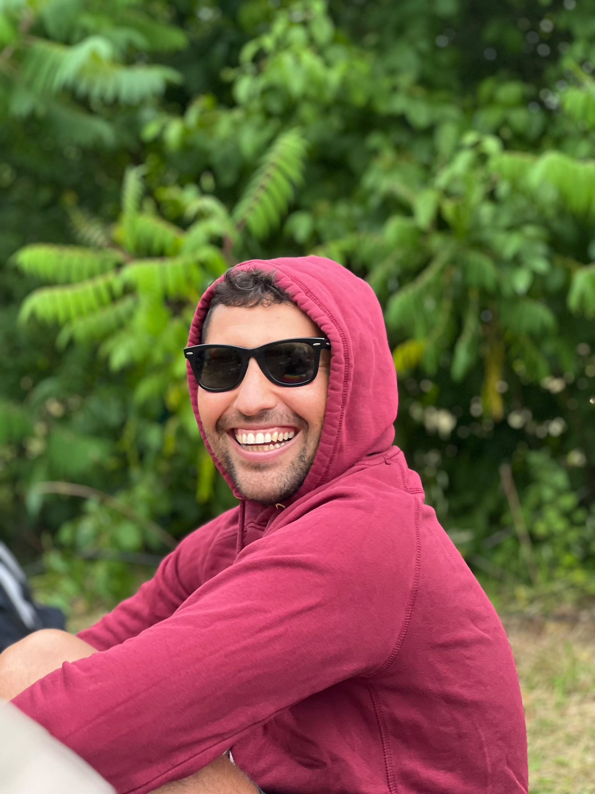

← Back to main page
Lab
Olympics
2026
Lab Olympics 2026 · Cortex United
Saturday
June 6 · Alster Lake
🚲 Bike · 🔁 Staffel · 🏃 Run
At a glance
Where to Go at 14:00
🏁
Everyone
bikers · solo runners · spectators
📍 START pin
🔁
Staffel Runners
runner leg only · meet Simone
📍 Station #2 (purple pin)

👆 That's Simone
🚲
Stadtrad tip
Pick up a bike
on your way
. At the marked station,
lock & re-rent
to reset the 30 min free timer.
👟
The Route
~7.5 km loop around the Alster,
anti-clockwise
. Stay on the
inner lakeside path
. Bikers first, then runners — same start point.
Programme
Schedule
14:00
Meeting
🤝 Gather — two meeting points
📍 START — everyone else
📍 Station #2 — Staffel runners + Simone
14:15
Individual Bike
🚲 Bike race start — rolling
Lock & re-rent at Station #1 (or #1b), then go.
1 per team · ~7.5 km · ~30 min
14:30
Staffel
🔁 Staffel start — bike leg
Biker locks & re-rents at Station #1, rides to Station #2, tags the runner.
Bike ~15 min
Run ~25 min
finish ~15:00
↳ ~14:45
Handoff
🤝 Staffel changeover at Station #2
Biker locks bike → tags runner → runner sprints to finish.
📍 Station #2 · 👤 Simone here
14:45
Individual Run
🏃 Run race start
Full ~7.5 km loop from START. Last finisher expected ~15:35.
1 per team · ~50 min · 📍 START
Interactive Map
Alster Lake — Key Locations
START / Finish
Stadtrad Station #1 — Primary
Stadtrad Station #1b — Alternative
Stadtrad Station #2 — Staffel Handoff
Tap any pin to see details and open in Google Maps.